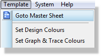
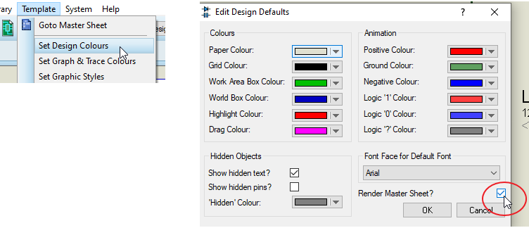

THE MASTER SHEET
Each design has a Master Sheet (accessible from the Template Menu). The contents of this sheet are drawn on all sheets on the design thus providing a method for displaying a single sheet style throughout a design.

The following points relating to the master sheet are worthy of note :
- While objects on the master sheet are visible on every sheet on the design they can only be edited or deleted by returning to the Master sheet.
- As a result of the above and to avoid confusion only 2D Graphics and scripts can be placed on the master sheet – you cannot place components or other objects, nor can you import or paste other objects onto the master sheet.
- If you change the sheet size on a given sheet such that it is no longer the same as the sheet size of the master sheet then the master sheet is suppressed across all sheets (it would be pointless at best to have a master sheet of A4 size showing on an A3 sheet for example).
- If you change the size of the master sheet such that it different from the size of an existing sheet then you will be prompted to change the size of all existing sheets to match that of the master sheet. Note that this may have consequences if, for example, your existing sheet is A3 and you change the master sheet size to be A4.
Note that if you don't see your graphics on the root sheets, but they are on the Master Sheet you will need to go to the Template Menu > Set Design Colours and check the box Render Master Sheet:

The Templates Tutorial provides a walkthrough of creating and modifying design templates including editing the master sheet.